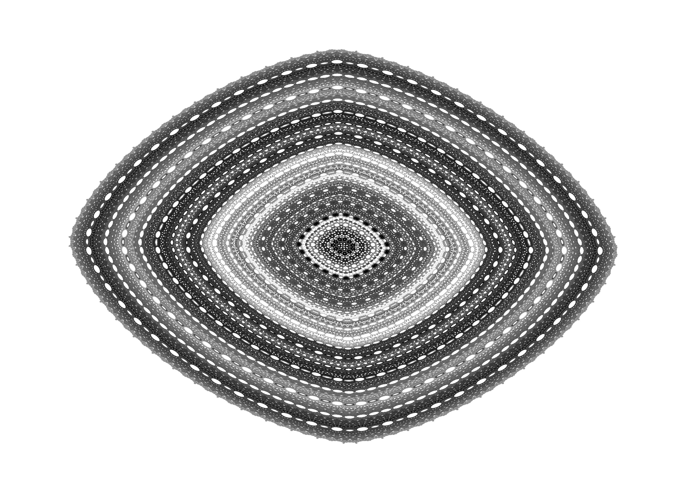
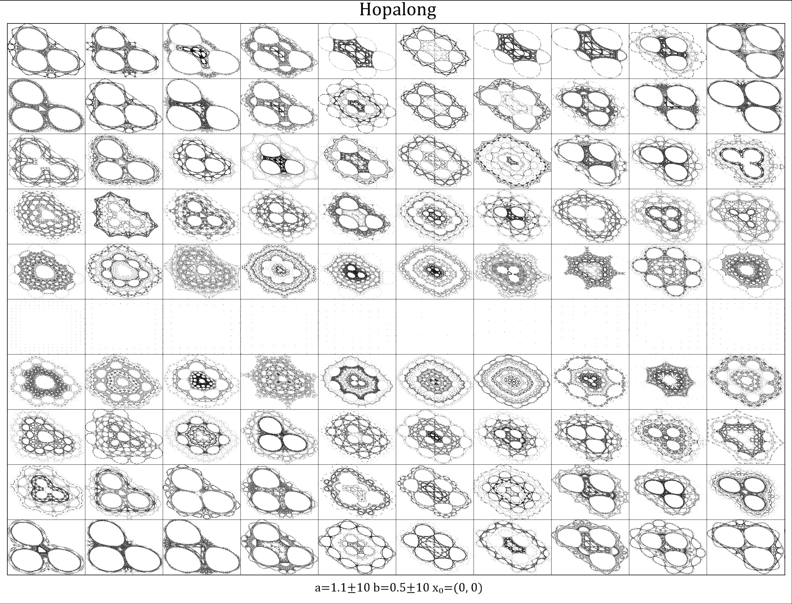
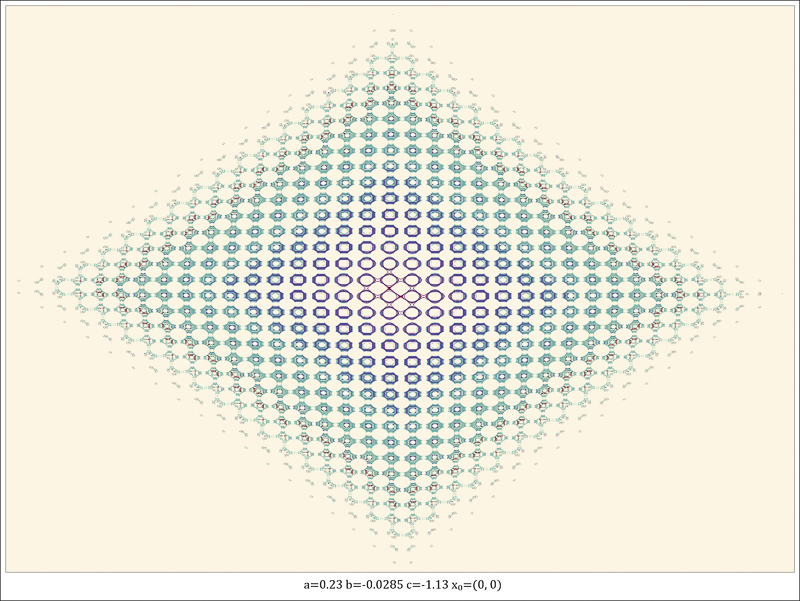
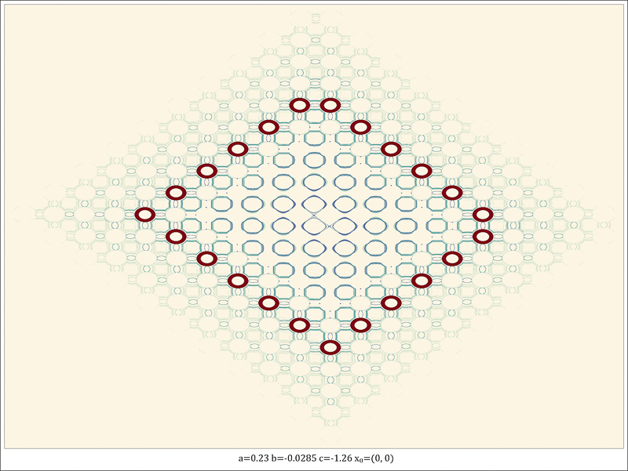
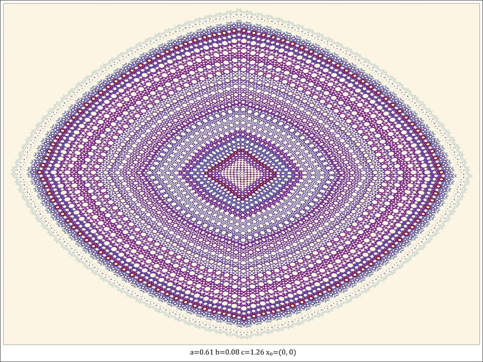
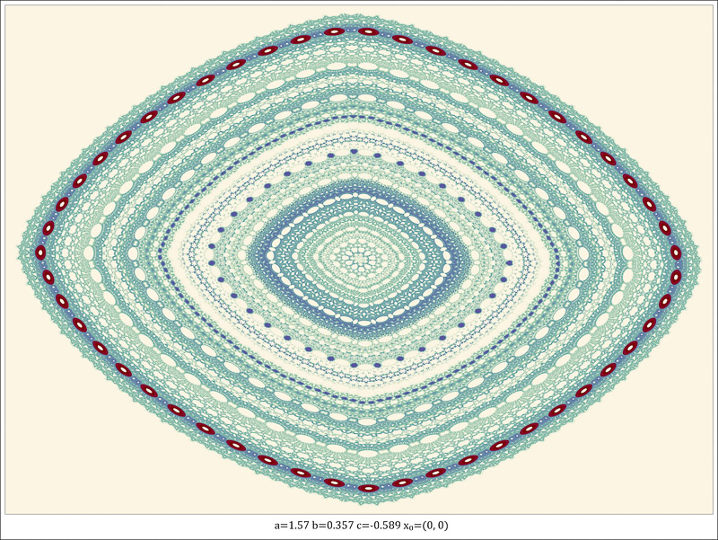
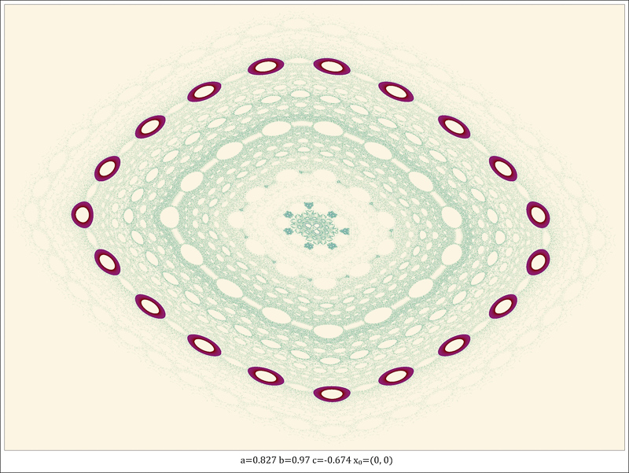
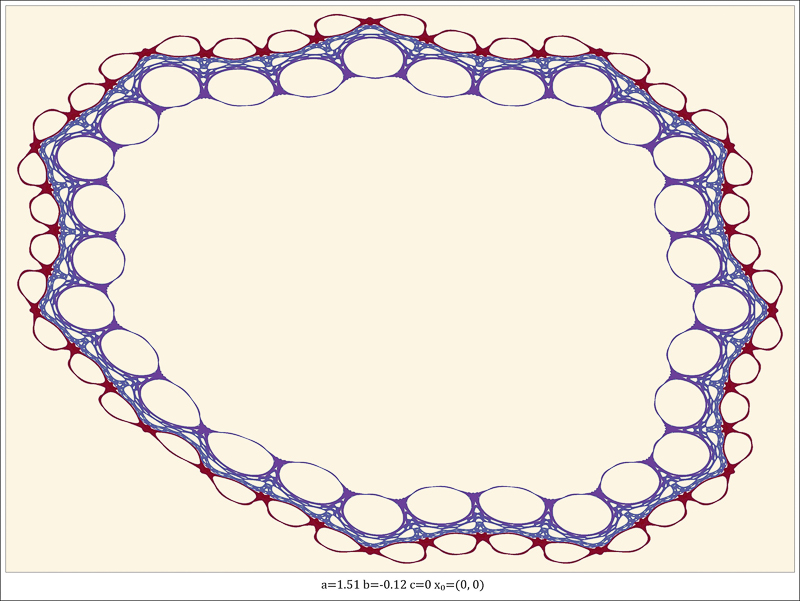
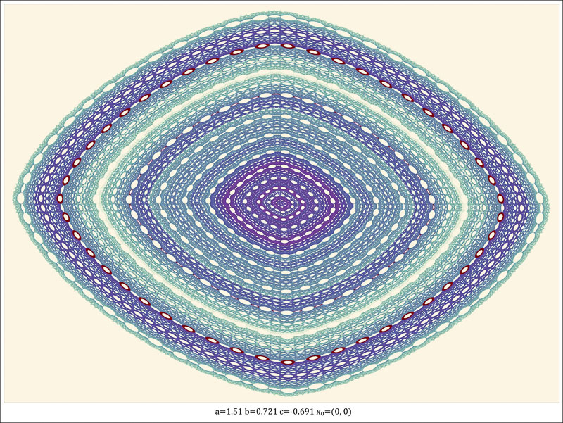
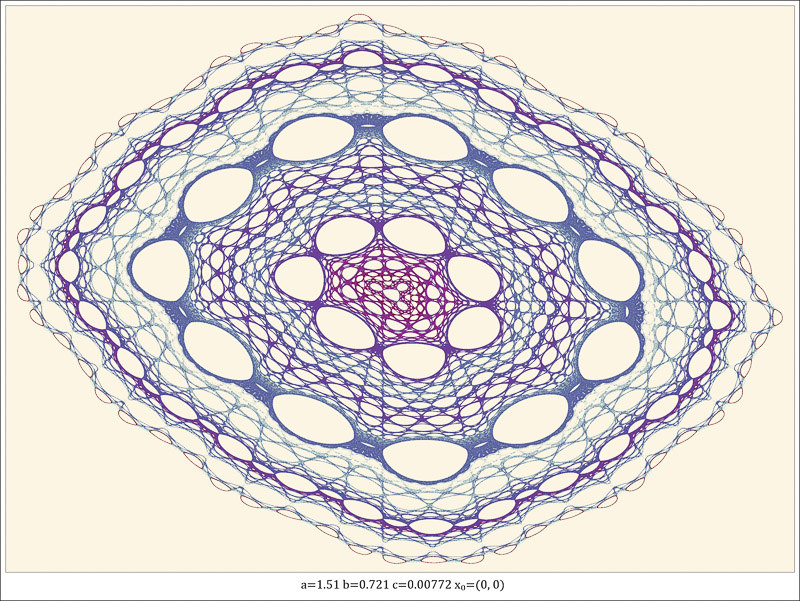

The Hopalong attractor is a 2-dimensional attractor produced by the following equation:
Even small parameter changes produce very different images. Continuously varying parameters over a range of values does not produce smooth changes like with most other attractors.


Survey of the Hopalong Attractor






